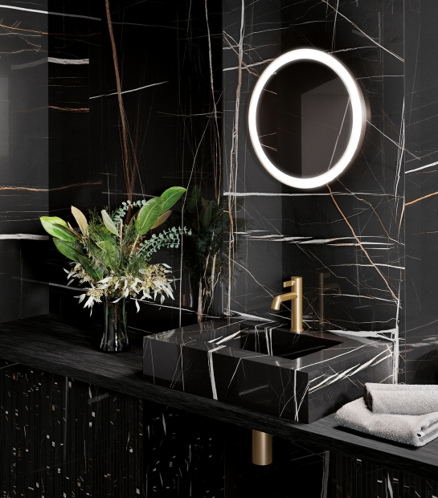

Italon Home
Italon Home — это эксклюзивная марка мебели и предметов интерьера, в которой керамогранит Italon – ключевой элемент в уникальных дизайнерских объектах, расширяющих концепцию современного стиля.

Преимущества Italon Home
Мебель с возможностью персонализации для безупречного сочетания с полом и стенами
Безупречное сочетание цветов мебели и сантехники из керамогранита с плиткой Italon для пола и стен дарит абсолютную свободу выражения. Это идеальный вариант для интерьерных решений, соответствующих вкусам и предпочтениям тех, кто живет в пространстве.
Новые возможности в дизайне и использовании керамогранита
Керамогранит не просто красив, но и очень прочен. Он идеально подойдет для облицовки любого предмета интерьера. Керамогранит – это натуральный и безопасный материал, который украсит любые пространства. Но это еще не все: керамогранит не горит, не выделяет вредные вещества, долговечен, легок в монтаже и всегда выглядит как новый!
Современный и эксклюзивный итальянский дизайн мебели
Italon Home позволит максимально выразить индивидуальный стиль любых дизайнерских идей. Благодаря уникальной возможности персонализации мебели согласно требованиям заказчика, облицовка пола и стен безупречно сочетается с изделиями Italon Home. Так рождаются эксклюзивные пространства без ограничений в дизайне
Гамма продукции
- Столы
- Deluxe
- Тумбы для гостинной
- Royal
- Раковины
- Fly
- Cube
- Журнальные столики
- Lounge
- Square
- Душевые поддоны
- Diamond
- Книжные стеллажы
- Trinity
- Opera
Вы можете сами подсчитать сумму выбранной мебели
| Мебель | Длина (мм. в м.) | Ширина (мм. в м.) | Количество | Цена (бел. руб) |
|---|---|---|---|---|
| Столы | 100 | 100 | 1 | 30 |
| Тумба для гостинной | 100 | 100 | 1 | 30 |
| Раковина | 100 | 100 | 1 | 30 |
| Журнальный столик | 100 | 100 | 1 | 30 |
| Душевой поддон | 100 | 100 | 1 | 30 |
| Книжный стеллаж | 100 | 100 | 1 | 30 |